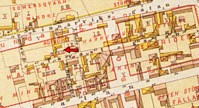
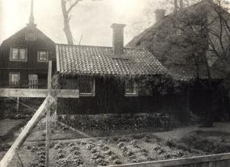

Södermalm i tid och rum. Stockholm
Tavastgatan 58. Huset till vänster är Tavastgatan 60. Längst till höger
syns Lundagatan 13. Bakom fotografens rygg börjar Stora Hargränd.


Huset till vänster är Tavastgatan 60. Längst till höger syns
Lundagatan 13. 1923